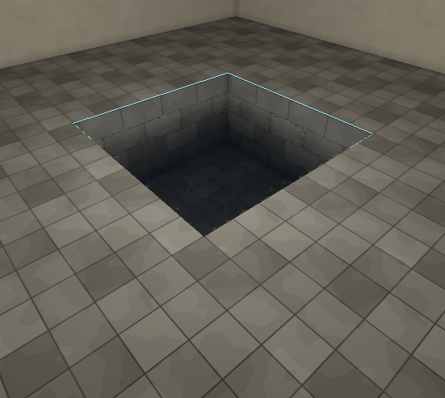

Fills
A fill says what is in a room instead of nothing. Hammerite ships one: Water. Your game may add others.
Only an air brush can be filled. A filled room is still a room: it carves, connects through openings, and lets light, sound and agents through. The fill changes what it looks like and what the game does inside it.
Filling a room
- Select one or more air brushes.
- In the inspector, find Fill: room.
- Choose Water, or Nothing to empty it.
The fill section only appears when every selected brush is air. See Interface.
What being in the water does, such as swimming or drowning, is your game's. For guards and other agents, see Links.
The water surface
The surface is where a filled room meets an unfilled one. The filled room's face there becomes the surface, drawn from both sides.
- The opening between the two rooms is not cut out of the surface. The surface is the opening.
- Two water rooms that touch or overlap are one body of water. No surface is drawn between them.
- The sides and bottom of a water room are its walls, as in any room.
The surface's texture works as a mask. Transparent texels are open water. Opaque texels are something floating on it, such as lily pads, and drift as the water moves. Use a fully transparent texture for clear water.
Water is never a texture name. A face textured to look like water is only a face.
Building a pool
A pool with its surface level with the floor:
- Carve the room.
- Carve the pool as a second air brush under the floor, its top face flush with the room's floor and inside its outline.
- Set the pool's fill to Water.
A pool whose surface is below the floor:
- Carve the room.
- Carve the basin as an unfilled air brush under the floor, abutting the room.
- Carve the water as a third air brush inside the basin, from the basin's bottom up to the water line.
- Set only the water brush's fill to Water.

Water properties
A water room shows a Water section in the inspector.
| Property | Range | Default | What it does |
|---|---|---|---|
| Clarity | 0 to 1 | 0.1 | How far you see through it. 0 is silt, 1 a clear spring. A shallow pool at 0 still reads deep. |
| Tint | colour | dark blue-green | The colour what is behind the surface fades to with depth. |
| Disturbance | 0 to 1 | 1 | How much the surface moves. 0 is a still pond; 1 is stirred or running water with the sharpest, fastest caustics. |
What the surface looks like is the game's to decide. Hammerite's own water shows how clear and how disturbed it is and nothing more; a game can draw its water its own way from the same three properties.
Light in and around water is baked: caustics, light bending at the surface, the pool throwing light onto walls and ceiling, and the water's tint on what lies under it. A change to Disturbance moves the caustics only after the next bake. See Lighting.
Rooms full of water also sound different. See Rooms.